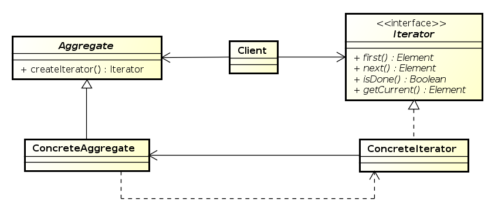
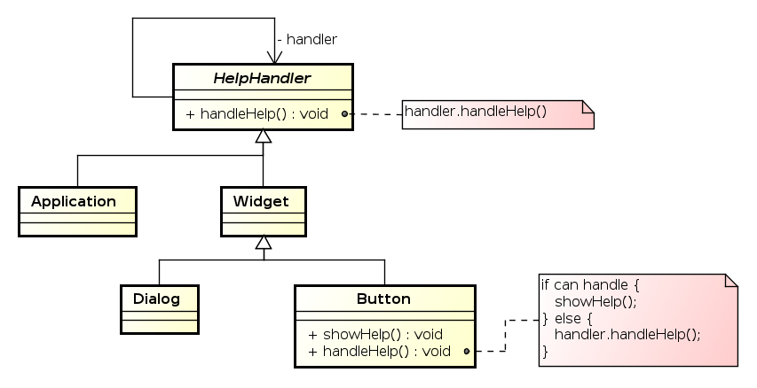

Softverski obrasci i komponente
Obrasci ponašanja


Fakultet tehničkih nauka u Novom Sadu
Katedra za informatiku
Obrasci ponašanja
- Bave se algoritmima i raspodelom odgovornosti između objekata.
- Ne definišu samo obrazac strukture već i obrazac komunikacije između objekata.
Iterator
- Omogućava pristup elementima kolekcije sekvencijalno bez otkrivanja konkretne reprezentacije kolekcije.
Struktura obrasca
Java implementacija
- Iterator obrazac je direktno podržan u javinim standardnim
bibliotekama – Interfejsi
Iterable<E>iIterator<E>.
Java implementacija

Java implementacija - While petlja
List<Integer> intList = new ArrayList<Integer>();
Iterator<Integer> i = intList.iterator();
while(i.hasNext()){
Integer a = i.next();
System.out.println(a);
}
Java implementacija - ForEach petalja
Iteratori su podržani direktno u Java programskom jeziku. For-each
petlja u javi se može koristiti za bilo koji objekat koji implementira
Iterable<E> interfejs ili za java nizove.
List<Integer> intList = new ArrayList<Integer>();
for(Integer i: intList){
System.out.println(i);
}
Command
- Enkapsulacija zahteva za obradom u vidu objekta.
- Omogućava kreiranje redova za obradu (Queues) kao i undo operacije.
- Poznat i pod nazivima Action i Transaction.
Struktura obrasca
Saradnja učesnika

Šta dobijamo?
- Razdvajamo objekat koji inicira izvršavanje operacija od onoga koji "zna" kako operaciju treba izvršiti.
- Command objekti su objekti prvog reda. Mogu se tretirati kao i svi drugi objekti.
- Komande se mogu komponovati (upotrebom Composite obrasca) i formirati složenije komande – makro komande.
- Nove komande se lako dodaju – nije potrebno izmeniti postojeće klase.
Mediator
- Objekat koji enkapsulira znanje o interakciji grupe objekata.
- Omogućava slabo sprezanje (loose coupling) objekata tako što objekti ne referenciraju jedni druge direktno.
Struktura obrasca

Primer

Saradnja učesnika
Šta dobijamo?
- Složena interakcija objekata je centralizovana – izmena se vrši nasleđivanjem jedne klase.
- Objekti koji stupaju u interakciju su slabo spregnuti – objekte i medijator možemo menjati nezavisno.
- Jednostavniji protokol – veze više-na-više zamenjene vezama jedan-na-više koje su lakše za razumevanje i izmenu.
- Logika interakcije objekata je odvojena od njihovog individualnog ponašanja – inerakcija se lakše analizira.
- Problem koji može nastati – monolitan i previše kompleksan medijator objekat.
Memento
- Bez narušavanja enkapsulacije beleži i eksternalizuje interno stanje objekta tako da se objekat može kasnije vratiti u identično stanje.
- Poznat i pod nazivom Token.
Struktura obrasca

Saradnja učesnika

Šta dobijamo?
- Očuvavamo enkapsulaciju – memento ne otkriva detalje interne implementacije Originator objekta iako se njegovo stanje čuva van njega. Pristup Memento objektu je moguć samo od strane Originator objekta.
- Pojednostavljen dizajn Originator objekta – klijenti čuvaju stanje objekta kroz Memento objekat.
- Korišćenje Memento objekata može biti problematično ukoliko je stanje Originator-a definisano velikom količinom podataka.
- U nekim programskim jezicima je teško sprečiti pristup internoj strukturi Memento objekta od strane drugih objekata u sistemu.
Observer
- Definiše međuzavisnost objekata tako da kada se stanje jednog objekta promeni svi zavisni objekti se automatski obaveštavaju.
- Poznat i pod nazivom Publish-Subscribe.
Struktura obrasca

Saradnja učesnika

Podrška u Javi
- Interfejs
Observeri klasaObservableu paketujava.util. - Mehanizam Listener-a u Swing-u prati ovaj obrazac.
Šta dobijamo?
- Apstraktno sprezanje Observer i Observable objekata. Observable ne zna konkretne klase Observer objekata već komunicira sa njima putem jednostavnog interfejsa.
- Broadcast stil komunikacije. Observable javlja da se promena dogodila. Ne mora se navoditi primalac poruke. Svi zainteresovani osluškivači će dobiti notifikaciju o promeni.
- Ukoliko Observable ne navodi u pozivu poruke šta je promenjeno, Observer-i moraju to sami da ispitaju što može biti "skupo".
Napomene
- Ukoliko Observer posmatra više Observable objekata potrebno je identifikovati objekat koji šalje poruku o promeni – slanje reference na objekat kao parametra.
- Izmena stanja Observable objekta prilikom obrade notifikacije može dovesti do beskonačne rekurzije.
State
- Izmena ponašanja objekta prilikom promene njegovog internog stanja. Objekat se ponaša kao da je promenio klasu.
Struktura obrasca

Saradnja učesnika
- Context delegira operacije zavisne od stanja objektu state (ConcreteStateX).
- Context može proslediti sebe u zahtevu ukoliko stanje treba da mu pristupa.
- Klijenti koriste isključivo Context, mada mogu, ukoliko je potrebno, postaviti tekuće stanje.
- Odluku o prelasku u novo stanje može doneti Context ili tekući state objekat.
Primer

Šta dobijamo?
- Lokalizacija koda specifičnog za određeno stanje u jednu klasu - izbegavanje velikih switch/if-else iskaza.
- Eksplicitan prelazak između stanja.
Napomene
- Promena stanja: Context ili ConcreteStateX?
- Ukoliko menja ConcreteStateX potrebno je da pristupa Context-u preko interfejsa za promenu stanja.
- Negativno: stanja moraju da znaju jedna za druge.
- Ukoliko Context menja stanje – kod može biti dosta kompleksan kod većeg broja stanja.
- Kreiranje i uništavanje State objekata: jednom pri inicijalizaciji ili pri svakoj promeni stanja.
- Određeni programski jezici podržavaju oblik dinamičkog nasleđivanja – prirodna podrška za State obrazac.
Strategy
Definisanje familije algoritama i omogućavanje njihove izmene bez uticaja na klijenta.
Struktura obrasca

Primer

Šta dobijamo?
- Definisanje familije algoritama. Nasleđivanje strategija se može koristiti za implementaciju zajedničke funkcionalnosti algoritama.
- Izmena ponašanja objekta dinamički. Nasleđivanjem kontekst klase može se postići izmena funkcionalnosti ali je ona statičke prirode.
- Eliminacija iskaza uslova (if-else, switch).
- Omogućavamo klijentu izbor algoritma i njegovih performansi (npr. manji utrošak memorije ili brže izvršavanje).
Template Method
- Definisanje strukture algoritma pri čemu se definisanje određenih koraka ostavlja klasama naslednicama.
- Struktura algoritma je nepromenjiva ali se određeni koraci mogu promeniti.
Struktura obrasca

Primer

Šta dobijamo?
- Mogućnost definisanja invarijantnih delova algoritma u apstraktnoj klasi a varijabilnih delova u podklasama – sprečava se dupliranje koda.
- Invertovanje kontrole – "Hollywood principle" – "Don’t call us, we’ll call you".
- Definisanje tzv. hook operacija. Najčešće su prazne ali mogu imati definisano i standardno ponašanje. Za razliku od apstraktnih operacija, hook operacije su opcione (ne moraju se redefinisati).
Visitor
- Razdvajanje algoritma od strukture podataka nad kojim operiše.
- Lokalizacija implementacije operacije koja se izvršava nad elementima složene strukture podataka (npr. čvorovima stabla).
Struktura

Saradnja učesnika

Primer

Kada koristiti?
- Objektna struktura sadrži elemente različitih klasa a potrebno je izvršiti operaciju koja zavisi od konkretne klase objekta.
- Više različitih, nesrodnih operacija je potrebno izvršiti nad elementima složene strukture a želimo izbeći "zagađivanje", svih klasa čiji objekti čine složenu strukturu, sa novom metodom za svaku operaciju.
- Hijerarhija klasa objektne strukture se retko menja dok dodavanje novih operacija nad strukturom može biti česta operacija.
Napomene
- Visitor predstavlja implementaciju Double Dispatch mehanizma. Pozvana operacija zavisi istovremeno od tipa konkretnog Visitor objekta kao i od tipa konkretnog elementa strukture nad kojom se operacija vrši.
- Srodne operacije su lokalizovane u jednoj klasi.
Chain of Responsibility
- Izbegavanje jakog sprezanja objekta koji šalje zahtev od objekta koji vrši obradu zahteva tako što se objekti koji vrše obradu uvezuju u listu i daje se šansa svakom u nizu da obradi događaj sve dok neko ne odgovori pozitivno na zahtev (izvrši obradu).
Struktura

Primer
Kada koristiti?
- Više od jednog objekta može da obradi zahtev a obrađivač nije poznat unapred.
- Želimo da uputimo zahtev jednom iz grupe objekata a da ne navodimo konkretnog obrađivača eksplicitno.
- Lista mogućih obrađivača može dinamički da se menja u vreme izvršavanja.
Napomene
- Dve vrste: prosleđivanje zahteva niz lanac i posle obrade ili prekid prosleđivanja.
- Objekat koji vrši obradu nije eksplicitno definisan pa ne postoji garancija da će zahtev biti obrađen.